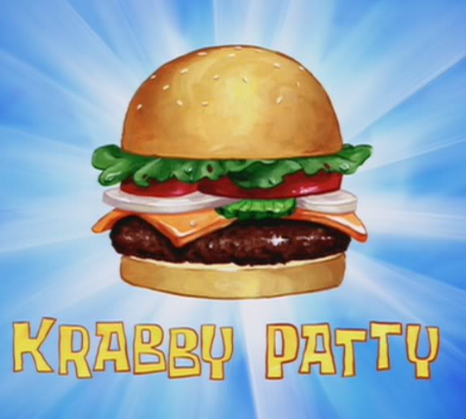

Classic Burger

Burger Description
A hamburger, or simply burger, is a food consisting of fillings—usually a patty of ground meat, typically
beef—placed inside a sliced bun or bread roll. Hamburgers are often served with cheese, lettuce, tomato, onion,
pickles, bacon, or chilis; condiments such as ketchup, mustard, mayonnaise, relish, or a "special sauce", often
a variation of Thousand Island dressing; and are frequently placed on sesame seed buns. A hamburger patty topped
with cheese is called a cheeseburger.
- 1 large egg
- 1/2 teaspoon salt
- 1/2 teaspoon black pepper
- 1 pound ground beef
- 1/2 cup fine dry bread crumbs
- Preheat an outdoor grill for high heat and lightly oil grate.
- Whisk together egg, salt, and pepper in a medium bowl.
- Add ground beef and bread crumbs and mix with your hands or a fork until well blended.
- Form into four 3/4-inch-thick patties
- Place patties on the preheated grill. Cover and cook 6 to 8 minutes per side, or to desired doneness. An
instant-read thermometer inserted into the center should read at least 160 degrees F (70 degrees C)
- Serve hot and enjoy!